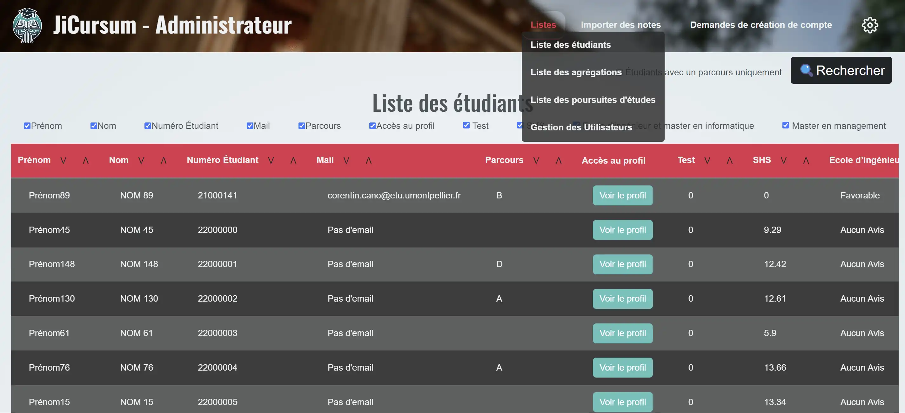

À PROPOS DE MOI
Présentation
Actuellement, je suis étudiant en informatique à l’IUT Montpellier-Sète. Convaincu que le front-end et le back-end sont deux facettes indissociables d’une expérience utilisateur réussie, j’accorde autant d’importance à la qualité visuelle qu’à la qualité fonctionnelle de mes travaux. Ma curiosité me pousse à explorer au-delà de ce qui m’est enseigné, approfondissant mes connaissances en frameworks CSS, Blender, JavaScript... Cette polyvalence me permet de me positionner comme un profil généraliste avec des compétences dans plusieurs domaines. Mon code reflète mon engagement envers la propreté et la qualité, tout en répondant aux exigences d’ergonomie et de modernité. La difficulté est un facteur qui me motive à apprendre et à collaborer sur des projets ambitieux.
Centres d’Intérêts
L’humain est une espèce à plusieurs facettes, c’est pourquoi mes passions et loisirs sont divers et variés. J’aime écouter de la musique, mais comme j’apprécie également créer ce que je consomme, je pratique le solfège et le piano par moi-même et en club. J’ai aussi passionné par les jeux vidéos et la puissance artistique qu’ils détiennent ainsi que par la culture Nippone aussi moderne que traditionnelle. Me permettant de maintenir un équilibre dans mon style de vie, je pratique la musculation et la course à pied. Mon côté artistique se façonne notamment à travers le dessin, tandis que ma soif d’ouverture sur le monde me pousse à apprendre de nouvelles langues. Bien sûr, ce ne sont là que mes principaux Hobbies, je suis souvent en train d’essayer de nouvelles choses.
Formation
BUT Informatique - Parcours RACDV
IUT Montpellier-Sète | 2023 – 2026 (en cours)
Formation axée sur la réalisation d'applications : conception, développement, validation et intégration.
Baccalauréat STI2D - Mention Très Bien
Lycée Victor Hugo, Lunel | 2020 – 2023
Spécialité Systèmes d'Information et Numérique (SIN).
Projets
Concours de Robotique Junior 2023
Au lycée, mon professeur d'option SIN (Systèmes d'Information et Numérique) m'a offert une expérience enrichissante en nous inscrivant, moi et d'autres volontaires de mon groupe, aux concours de Robotique Junior (moins de 18 ans). Pour la conception du robot, nous avons utilisé des cartes Arduino pour la logique et SolidWorks pour la modélisation des pièces destinées à l'impression 3D. Tout au long du projet, j'ai occupé le rôle de pilote et de responsable de la programmation de la logique, des contrôles du robot, ainsi que des différents appareils installés dessus. Ce fut l'occasion de structurer le développement du robot en trois phases et de faire ma première expérience de la méthode Agile.
Les résultats des concours, dans l'ordre chronologique, étaient les suivants :- 1ᵉ place - Occitanie Robotique Junior — avril 2023 à Toulouse
- 3ᵉ place - Concours EuroBot (Europe) — juin 2023 à Paris
- 3ᵉ place - France Robotique Junior — mai 2023 à La Roche-sur-Yon
Une routine d'échauffement pour les contrôles du robot !
Nuit de l'Info 2024 - 2025
En une nuit, de 18h à 8h, nous avons développé, avec mon équipe, un site web de sensibilisation sur l'impact environnemental sur les Océans. Pour ma part, j'ai principalement travaillé sur la partie front-end du site, en utilisant HTML, CSS et JavaScript. J'ai notamment eu mon premier contact avec le framework CSS Tailwind, que j'ai trouvé très intéressant à utiliser, en comparaison à BootStrap que j'ai appris sur la SAE Web ci-dessous. Des élèves de première année de BUT Informatique ont également participé à ce projet, ce qui a permis de renforcer la collaboration entre les différentes promotions. Je leur ai expliqué des bases de l'hébergement web et contribué à la mise en place du site sur un serveur. Avec l'élan naturel de la Nuit de l'Info, je me suis retrouvé coordinateur de l'équipe, ce qui m'a permis de mettre en pratique mes compétences en gestion de projet et en leadership.
SAÉ (Projet à l'IUT) JiCursum - Site Web en front et back end avec Php
Mon plus gros projet Universitaire de ma 2ᵉ année de BUT Informatique, réalisé en équipe de 3 personnes. Ce projet a duré 3 mois et consistait à créer un site web dans une optique de conseils d'orientation post-diplôme pour les étudiants de l'IUT. On y récupère les intégralités des notes des étudiants de 3ᵉ année puis grâce aux algorithmes mis en place, on peut créer des aggrégations manuellement ou automatiquement pour éstimer rapidement si les notes d'un étudiant sont suffisantes pour entrer dans une école ou une formation spécifique. Tout en restant assez permissif pour modifier des appréciations si un étudiant semble prometteur.
Stage à la MJC de Mauguio-Carnon — Développement d’un site avec Wagtail
Pendant mon stage de 2ᵉ année de BUT Informatique, j’ai intégralement réalisé la refonte du site web de la MJC de Mauguio-Carnon en autonomie. C'est-à-dire, pas de tuteur technique, personne qui sait coder à part moi. J'ai dû donc gérer beaucoup de chose seul et j'ai quand même pu offrir un bon résultat.
L’objectif principal était de concevoir une vitrine claire, moderne et responsive destinée au grand public, tout en facilitant la gestion du contenu pour les responsables de l’association ne sachant pas coder.
J’ai utilisé le CMS Wagtail (basé sur Django), avec Tailwind CSS pour le design et PostgreSQL pour la base de données. Le site est hébergé sur OVH, avec des fichiers média stockés sur AWS.
J'ai également automatisé plusieurs tâches pour simplifier la maintenance du site, telles que les sauvegardes de la BDD Postgres avec Crontab par exemple.
Ce projet m’a permis de renforcer mes compétences en développement web, en déploiement cloud et en conception orientée utilisateur. J’ai également appris à structurer un projet complexe autour d’un CMS moderne tout en collaborant avec des interlocuteurs non techniques.
Ce point final était intéressant, car j'ai dû m'adapter à leurs besoins et leur expliquer comment utiliser le site en vulgarisant mes termes, ce qui m'a permis de développer mes compétences en communication et en pédagogie.
- Développement fullstack avec Django et Wagtail (Python)
- Responsive design avec Tailwind CSS
- Déploiement et hébergement (Docker, OVH)
- Gestion de contenu simplifiée pour des utilisateurs non techniques
Voir le site en ligne : www.mjcmauguiocarnon.com
SKILLS
LANGUAGES
-

HTML CSS
-

JavaScript
-

PHP
-

Java
-

MariaDB
-

C++
OUTILS
-
Suite JetBrains
-

Méthode Agile Scrum
-

Docker
-

Gitlab
-

GitHub
-

Blender 4
Contactez-moi
Envoyez-moi un message directement via mon adresse e-mail : theodoredeboisseson@gmail.com